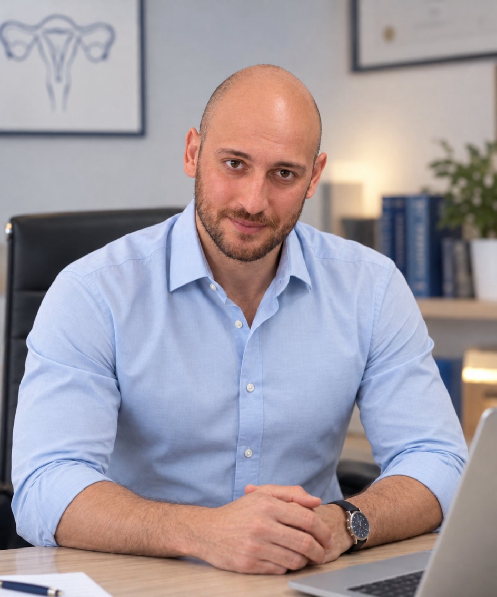
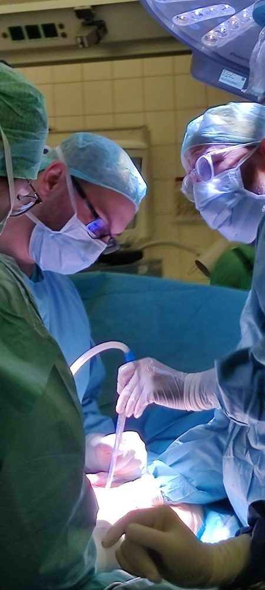
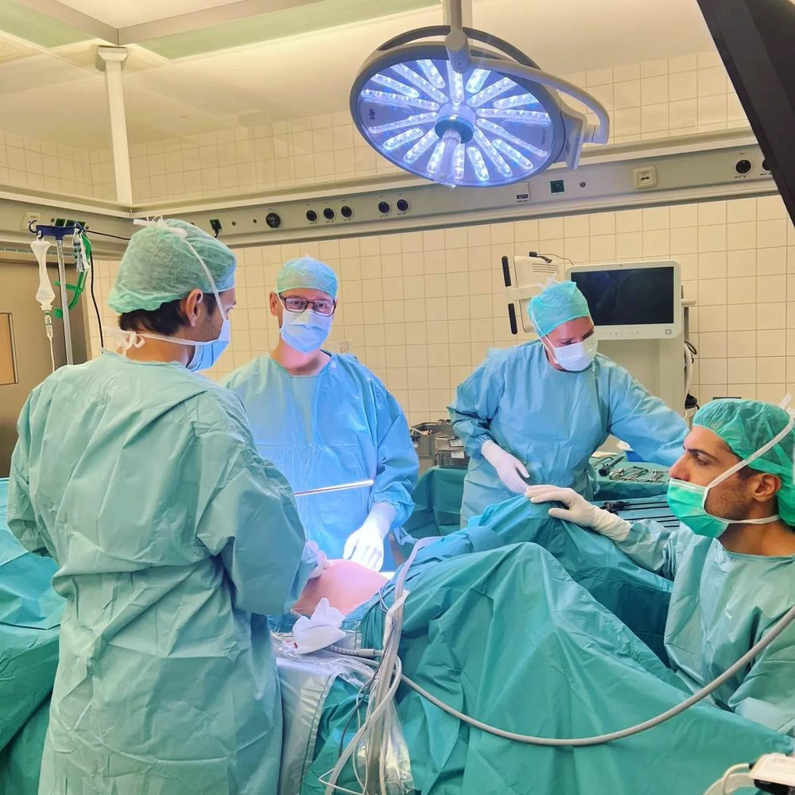
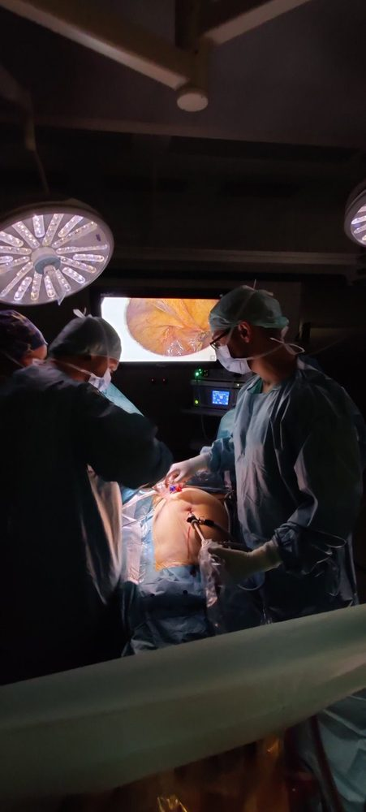
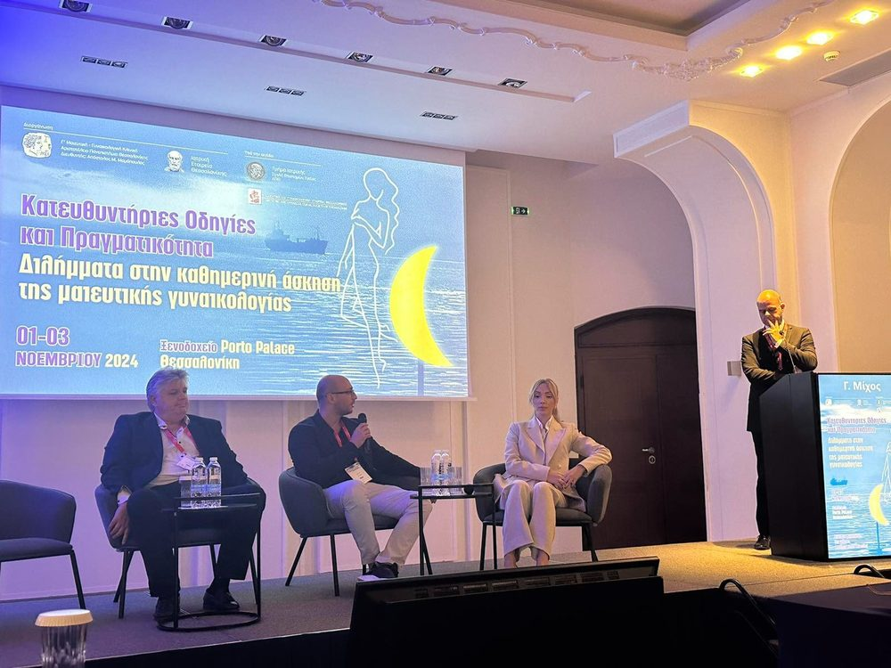
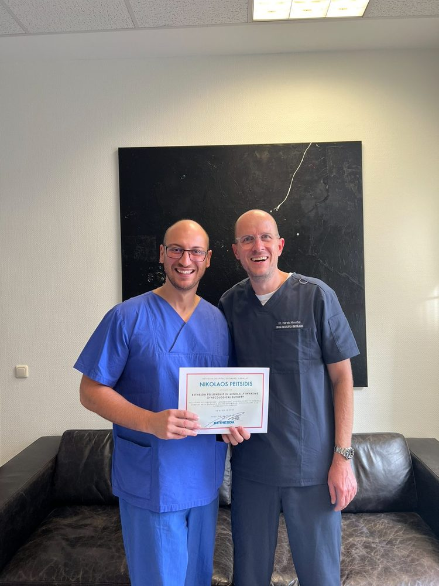
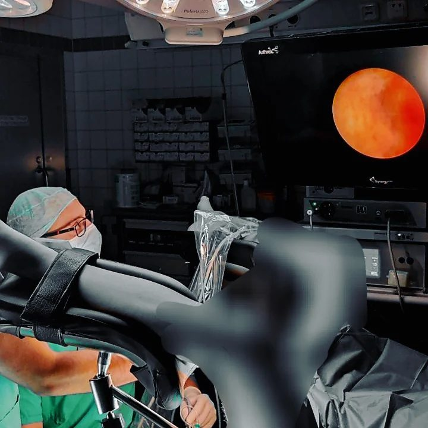
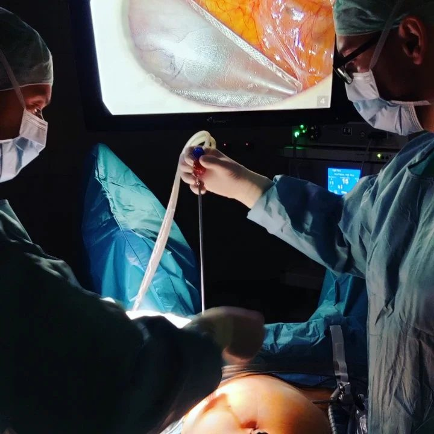

Απόφοιτος και Διδάκτωρ (PhD), Ιατρική Σχολή, Αριστοτέλειο Πανεπιστήμιο Θεσσαλονίκης — βαθμός «Άριστα μετά διακρίσεως».
Ο Ιατρός
Δρ. Νικόλαος Πεϊτσίδης
MD, MSc, MIGS, PhD · Μαιευτήρας – Χειρουργός Γυναικολόγος Αναπαραγωγής
Σύντομο βιογραφικό
Δρ. Νικόλαος Πεϊτσίδης, MD, MSc, MIGS, PhD
Ο Δρ. Νικόλαος Πεϊτσίδης είναι Μαιευτήρας – Χειρουργός Γυναικολόγος και διδάκτωρ του Αριστοτελείου Πανεπιστημίου Θεσσαλονίκης (ΑΠΘ), με βαθμό διδακτορικού «Άριστα με Διάκριση». Αποφοίτησε από την Ιατρική Σχολή του ΑΠΘ, στην οποία εισήχθη μέσω Πανελλαδικών Εξετάσεων με την πρώτη του προσπάθεια. Η κλινική του δραστηριότητα καλύπτει ένα ευρύ φάσμα της σύγχρονης μαιευτικής και γυναικολογίας, με ιδιαίτερο ενδιαφέρον για τη γονιμότητα, τη διερεύνηση της υπογονιμότητας και την αναπαραγωγική ιατρική.
Εξειδικεύτηκε στο Bethesda Krankenhaus Duisburg της Γερμανίας, με ιδιαίτερη έμφαση στη χειρουργική της αναπαραγωγής και τη χειρουργική αντιμετώπιση της ενδομητρίωσης. Η εκπαίδευσή του περιλάμβανε επίσης την υστεροσκοπική, λαπαροσκοπική και ρομποτική χειρουργική, καθώς και τη γυναικολογική ογκολογία και την ουρογυναικολογία.
Στη συνέχεια, εργάστηκε επί δύο έτη στο Κέντρο Αναπαραγωγικής Ιατρικής και Γενετικής «Assisting Nature». Ασχολείται με τη διερεύνηση της υπογονιμότητας, την υστεροσκόπηση, τη διάγνωση και αντιμετώπιση ενδομήτριων παθολογιών, όπως οι ενδομητρικοί πολύποδες, τα ινομυώματα της μήτρας, τη λαπαροσκόπηση και την ελάχιστα επεμβατική γυναικολογική χειρουργική, καθώς και τη φαρμακευτική και χειρουργική αντιμετώπιση της ενδομητρίωσης. Παράλληλα, ασχολείται με τη γυναικολογική υπερηχογραφία, την παθολογία του τραχήλου της μήτρας, την κολποσκόπηση και την πρόληψη των γυναικολογικών νοσημάτων. Συνεργάζεται με ιδιωτικές κλινικές και κέντρα υποβοηθούμενης αναπαραγωγής στη Θεσσαλονίκη.
Είναι κάτοχος μεταπτυχιακού τίτλου σπουδών στη χειρουργική της ελάσσονος πυέλου και του περινέου, με βαθμό Άριστα 10, καθώς και διπλώματος της Ελληνικής Σχολής Μαστολογίας, την οποία ολοκλήρωσε επιτυχώς κατόπιν εξετάσεων.
Το επιστημονικό του έργο περιλαμβάνει πολυάριθμες δημοσιεύσεις σε έγκριτα διεθνή ιατρικά περιοδικά, καθώς και συμμετοχή σε επιστημονικά συνέδρια και παρουσίαση ερευνητικών εργασιών. Τα ερευνητικά του ενδιαφέροντα επικεντρώνονται κυρίως στην υστεροσκόπηση, τις ενδομήτριες παθολογίες, τη γονιμότητα και την υποβοηθούμενη αναπαραγωγή.
Βασικός του στόχος είναι η παροχή σύγχρονης, επιστημονικά τεκμηριωμένης και εξατομικευμένης ιατρικής φροντίδας, με σεβασμό στις ανάγκες κάθε γυναίκας, έμφαση στην πρόληψη και την ουσιαστική επικοινωνία, καθώς και αξιοποίηση των σύγχρονων διαγνωστικών και θεραπευτικών μεθόδων.

Πλήρες βιογραφικό
Με μια ματιά
Μεταπτυχιακό (MSc) στη «Χειρουργική Ελάσσονος Πυέλου και Περινέου», Ιατρική Σχολή, Πανεπιστήμιο Θεσσαλίας — βαθμός 10, «Άριστα».
Πτυχίο Ιατρικής, Ιατρική Σχολή, Αριστοτέλειο Πανεπιστήμιο Θεσσαλονίκης — βαθμός 7, «Λίαν Καλώς».
Μετεκπαίδευση στη «Λαπαροσκοπική, Υστεροσκοπική, Ρομποτική και Κολπική Χειρουργική», Evangelisches Krankenhaus Bethesda Duisburg, Γερμανία.
Μετεκπαίδευση στην «Αντιμετώπιση Υπογονιμότητας και Χειρουργική Αναπαραγωγής», Evangelisches Krankenhaus Bethesda Duisburg, Γερμανία.
Δίπλωμα Μαστολογίας, Ελληνική Σχολή Μαστολογίας, μετά από επιτυχία στις τελικές εξετάσεις της σχολής.
Σπουδές & Μετεκπαίδευση
Ακαδημαϊκή πορεία
Δευτεροβάθμια εκπαίδευση
2ο Γενικό Λύκειο Συκεών Θεσσαλονίκης. Βαθμός απολυτηρίου «Άριστα» (19,2).
Πτυχίο Ιατρικής
Ιατρική Σχολή, Αριστοτέλειο Πανεπιστήμιο Θεσσαλονίκης. Επιτυχής εισαγωγή με την πρώτη συμμετοχή στις πανελλαδικές εξετάσεις. Βαθμός πτυχίου «Λίαν Καλώς» (6,83).
Μεταπτυχιακό Δίπλωμα Εξειδίκευσης (MSc) «Η Χειρουργική Ελάσσονος Πυέλου και Περινέου»
Τμήμα Ιατρικής, Πανεπιστήμιο Θεσσαλίας. Διάρκεια 2 εξάμηνα, 60 ECTS. Βαθμός 10 (δέκα), «Άριστα». Ολοκλήρωση υποχρεώσεων 16/7/2019, ορκωμοσία 27/4/2020.
Διπλωματική εργασία: «Η ενδομητρίωση περινέου και πυέλου μετά από μαιευτικές και γυναικολογικές επεμβάσεις».
Επιβλέπουσα: Χριστίνα Μεσσήνη, Λέκτορας Μαιευτικής – Γυναικολογίας. Μέλη επιτροπής: Αλέξανδρος Δαπόντε και Κωνσταντίνος Νταφόπουλος, Καθηγητές Μαιευτικής – Γυναικολογίας, Τμήμα Ιατρικής Πανεπιστημίου Θεσσαλίας.
Πιστοποιητικό επιμόρφωσης στη βασική ενδοσκοπική χειρουργική στη γυναικολογία
«Μετεκπαιδευτικά μαθήματα πρακτικής εξάσκησης στη βασική ενδοσκοπική χειρουργική στη γυναικολογία πάνω σε προπλάσματα», Κέντρο Επιμόρφωσης και Διά Βίου Μάθησης ΑΠΘ. Διάρκεια 29 ωρών, 4,5 ECTS (8/9/2020 – 8/7/2021). Επιστημονικός υπεύθυνος: Άγγελος Δανιηλίδης, Αναπληρωτής Καθηγητής ΑΠΘ.
Δίπλωμα Ελληνικής Σχολής Μαστολογίας
Μετά από ολοκλήρωση των πέντε διήμερων κύκλων μαθημάτων της Σχολής και επιτυχία στις τελικές εξετάσεις. Η Σχολή ιδρύθηκε το 2009 υπό την αιγίδα της Διεθνούς Εταιρείας Μαστολογίας (Senologic International Society – SIS) και τελεί υπό την αιγίδα του Υπουργείου Υγείας.
Διδακτορική διατριβή (PhD), Ιατρική Σχολή ΑΠΘ
Θέμα: «Επίδραση της υστεροσκοπικής διατομής του πυθμένα της μήτρας, με ψαλίδι, στο ποσοστό κύησης στις εμβρυομεταφορές με δωρεά ωαρίων». Από τα δεδομένα της μελέτης δημοσιεύθηκαν έξι άρθρα σε έγκριτα επιστημονικά περιοδικά, με συνολικό impact factor 16.
Επιβλέπων: Ευάγγελος Παπανικολάου. Μέλη τριμελούς επιτροπής: Ιωάννης Καλογιαννίδης, Καθηγητής, και Απόστολος Αθανασιάδης, Καθηγητής – Διευθυντής.
Προφορική δοκιμασία 7/10/2024: ομόφωνη απόφαση της επταμελούς επιτροπής, βαθμός «Άριστα με Διάκριση». Αναγόρευση διδάκτορα ΑΠΘ στις 27/11/2024.
Επαγγελματική απασχόληση
Επαγγελματική πορεία
Στρατιωτική Θητεία
Εκπλήρωση στρατιωτικής θητείας στον Στρατό Ξηράς ως οπλίτης ιατρός άνευ ειδικότητας. Κατόπιν αξιολόγησης ως Ι1, επιλέχθηκε ως Ιπτάμενος Ιατρός Διάσωσης στη Μονάδα Ελικοπτέρων Στεφανοβικείου.
Γενική Χειρουργική
Εκπαίδευση στη Β΄ Χειρουργική Κλινική του Γενικού Νοσοκομείου Θεσσαλονίκης «Γ. Παπανικολάου», με συμμετοχή στη διάγνωση και αντιμετώπιση χειρουργικών περιστατικών και στη διενέργεια χειρουργικών επεμβάσεων.
Ειδικότητα Μαιευτικής – Γυναικολογίας
Ειδίκευση στο Γενικό Νοσοκομείο Θεσσαλονίκης «Ο Άγιος Δημήτριος», στη Μαιευτική – Γυναικολογική Κλινική του Γενικού Νοσοκομείου Κοζάνης «Μαμάτσειο» και στη Γ΄ Μαιευτική – Γυναικολογική Κλινική ΑΠΘ, Γενικό Νοσοκομείο Θεσσαλονίκης «Ιπποκράτειο».
Υπηρεσία Υπαίθρου και Παράλληλη Νοσοκομειακή Δραστηριότητα
Υπηρεσία στο Περιφερειακό Ιατρείο Μολόχας του Κέντρου Υγείας Τσοτυλίου, σε χαρακτηρισμένη άγονη και προβληματική περιοχή. Παράλληλα, ενεργή κλινική δραστηριότητα στο Γενικό Νοσοκομείο Κοζάνης, με συμμετοχή στο πρόγραμμα εφημεριών και στα πρωινά χειρουργεία της Μαιευτικής – Γυναικολογικής Κλινικής, συμβάλλοντας στη διαχείριση επειγόντων περιστατικών και στη χειρουργική αντιμετώπιση μαιευτικών και γυναικολογικών παθήσεων.
Κλινική Μετεκπαίδευση στη Γερμανία
Clinical Fellow in Minimally Invasive Gynecological Surgery στο Evangelisches Krankenhaus Bethesda Duisburg, Γερμανία, υπό την καθοδήγηση του Καθηγητή Harald Krentel, Προέδρου της European Endometriosis League (EEL). Εξειδικευμένη εκπαίδευση στην προηγμένη ενδοσκοπική γυναικολογική χειρουργική, με αντικείμενο τη λαπαροσκόπηση, την υστεροσκόπηση, τη ρομποτική χειρουργική Da Vinci, την ενδομητρίωση, τη γυναικολογική ογκολογία, την ουρογυναικολογία και τη χειρουργική της αναπαραγωγής. Συμμετοχή σε περισσότερες από 100 χειρουργικές επεμβάσεις ως Clinical Fellow.
Κλινική Εμπειρία στην Αναπαραγωγική Ιατρική
Διετής συνεργασία με τη Μονάδα Ιατρικώς Υποβοηθούμενης Αναπαραγωγής (ΜΙΥΑ) Assisting Nature στη Θεσσαλονίκη, ως Γυναικολόγος Αναπαραγωγής, με απόκτηση σημαντικής κλινικής εμπειρίας στη διερεύνηση και αντιμετώπιση της υπογονιμότητας και στις μεθόδους υποβοηθούμενης αναπαραγωγής.
Επιμελητής Α΄ – Επιστημονικά Υπεύθυνος Μαιευτικής – Γυναικολογικής Κλινικής, Γενικό Νοσοκομείο Γρεβενών
Διορισμός κατόπιν κρίσης και προκήρυξης σε θέση Επιμελητή Α΄ του Εθνικού Συστήματος Υγείας (ΕΣΥ). Άσκηση καθηκόντων Επιστημονικά Υπεύθυνου της Μαιευτικής – Γυναικολογικής Κλινικής για διάστημα 1,5 έτους, με ευθύνη για την οργάνωση και την επιστημονική λειτουργία της κλινικής, καθώς και τη διαχείριση μαιευτικών και γυναικολογικών περιστατικών.
Παράλληλα, διατηρεί ιδιωτικό γυναικολογικό ιατρείο στην περιοχή Μετέωρα Πολίχνης Θεσσαλονίκης και συνεργάζεται με ιδιωτικές κλινικές της πόλης.
Ειδικότητα & άδειες
Τίτλοι
Εξετάσεις τίτλου ειδικότητας Μαιευτικής – Γυναικολογίας
Επιτυχία με την πρώτη συμμετοχή.
Άδεια χρήσης τίτλου ειδικότητας Μαιευτικής – Γυναικολογίας
Πανελλήνιος Ιατρικός Σύλλογος.
Full Registration with a licence to practise, General Medical Council (UK)
GMC reference number: 8035484.
Certificate of Reviewing, International Journal of Fertility and Sterility
Αξιολόγηση (peer review) του άρθρου «The effect of Hysteroscopic Endometrial Fundal Incision on pregnancy rate in women with at least one failed IVF cycle: a randomized controlled trial».
Ατομικές δεξιότητες
Γλώσσες
Αγγλικά
- Certificate in Advanced English (CAE) – University of Cambridge.
- Examination for the Certificate in Advanced English – University of Michigan.
- OET (Occupational English Test), 18/12/2021, βαθμός B — Listening 390, Reading 350, Writing 370, Speaking 370 (όριο εγγραφής στο GMC: τουλάχιστον 350 σε κάθε τμήμα).
Γερμανικά
- Zertifikat Deutsch, επίπεδο B1.
Ηλεκτρονικοί υπολογιστές
- Πολύ καλή γνώση χρήσης Η/Υ.
Συνεχιζόμενη εκπαίδευση
Συνέδρια & σεμινάρια
18 συνέδρια, σεμινάρια και πιστοποιήσεις, από το 2009 έως σήμερα.
- 19ο Διαπανεπιστημιακό Συνέδριο Ακτινολογίας, 12–15/11/2009 (18 CME).
- «Πρωτοπαθείς Ανοσοανεπάρκειες και Παιδιατρική Ανοσολογία», Ιατρική Σχολή Πανεπιστημίου Θεσσαλίας, 4–9/12/2009 (12 CME).
- 1ο Πανελλήνιο Συνέδριο Γενικής Χειρουργικής, 25–27/5/2012 (16 CME).
- 21st Panhellenic Congress on Thoracic Diseases with International Participation, Θεσσαλονίκη, 1–4/11/2012 (18 ECMEC).
- 6th Panhellenic Scientific Meeting of Urodynamics, Neurourology & Female Urology Section (UNUFU) of the Hellenic Urological Association, Θεσσαλονίκη, 24–26/9/2015 (11 CME-CPD).
- 10ο Πανελλήνιο Συνέδριο Νόσου Alzheimer & Συγγενών Διαταραχών – 2ο Μεσογειακό Συνέδριο Νευροεκφυλιστικών Νοσημάτων (21 CPE-CPD).
- Πιστοποιητικό κατάρτισης στη «Συλλογή, επεξεργασία και φύλαξη βλαστοκυττάρων από ομφάλιο λώρο και πλακούντα», Αιματολογική Κλινική Γ.Ν. «Παπανικολάου», 26/6/2017.
- Συνέδριο Υποβοηθούμενης Αναπαραγωγής και Εμβρυομητρικής Ιατρικής & 1st Ian Donald Ultrasound Course of Thessaloniki Branch, 27–29/4/2018 (20 CME-CPD).
- Επιτυχής ολοκλήρωση θεωρητικών εξετάσεων «Σεμινάριο πιστοποίησης στο γυναικολογικό υπερηχογράφημα», 4/7/2018 (αρ. πρωτ. 156/6/18).
- Πρόγραμμα εκπαίδευσης για τον μητρικό θηλασμό, Γ.Ν. Κοζάνης «Μαμάτσειο», 17–19/5/2019 (20 ώρες: 15,5 θεωρητικές και 4,5 πρακτικές). Οργάνωση από το Ινστιτούτο Υγείας του Παιδιού, βάσει των κατευθυντήριων οδηγιών ΠΟΥ/UNICEF για τα «φιλικά προς τα βρέφη» νοσοκομεία.
- Επιστημονική διημερίδα «Νεότερα δεδομένα σε θέματα διαγνωστικής και θεραπευτικής ογκολογίας», Ιατρικός Σύλλογος Κοζάνης σε συνεργασία με το Τμήμα Πυρηνικής Ιατρικής Α.Ν.Θ. «Θεαγένειο», Κοζάνη, 20–21/9/2019.
- Συνέδριο Γ΄ Μαιευτικής – Γυναικολογικής Κλινικής ΑΠΘ «Κατευθυντήριες οδηγίες και πραγματικότητα: από τη σύλληψη στη γέννηση», Θεσσαλονίκη, 1–3/11/2019.
- Συνέδριο Γ΄ Μαιευτικής – Γυναικολογικής Κλινικής ΑΠΘ «Κατευθυντήριες οδηγίες και πραγματικότητα: απεικονιστικά διλήμματα στη γυναικολογία», 20–22/11/2020 (10 μόρια ΕΜΓΕ).
- Webinar «COVID-19: κύηση και τοκετός — παρουσίαση ελληνικών δεδομένων», 19/12/2020.
- 27th EBCOG European Congress of Obstetrics and Gynaecology, Αθήνα, 2–4/9/2021 (hybrid).
- ESGE 30th Annual Congress, Ρώμη, 3–5/10/2021 (onsite + virtual).
- Συνέδριο «Κατευθυντήριες οδηγίες και πραγματικότητα: διλήμματα στη γυναικολογική ογκολογία & εμμηνόπαυση», Θεσσαλονίκη, 19–21/11/2021 (10 μόρια ΕΜΓΕ).
- Συνέδριο «Κατευθυντήριες οδηγίες και πραγματικότητα: διλήμματα στην εμβρυομητρική ιατρική», Θεσσαλονίκη, 18–20/11/2022 (10 μόρια ΕΜΓΕ).
Επιστημονικό έργο
Προφορικές ανακοινώσεις & συμμετοχές
22ο Πανελλήνιο Συνέδριο Γενικής Ιατρικής, 7–11/4/2010
- Αιτίες προσέλευσης, παραπομπές και αντιμετώπιση καρδιολογικών περιστατικών σε τριτοβάθμιο ΤΕΠ — ο ρόλος της πρωτοβάθμιας φροντίδας υγείαςΕ. Πεϊτσίδου, Κ. Μιχαηλίδης, Γ. Αγραφιώτης, Δ. Μπαδιανούδη, Ε. Καραωργίου, Μ. Ζαφειρίου, Μ. Παπαϊωάννου, Ν. Πεϊτσίδης
- Κεφαλαλγία και διαχείρισή της στο ΤΕΠ από δύο ειδικότητεςΓ. Αγραφιώτης, Ε. Πεϊτσίδου, Μ. Ζαφειρίου, Κ. Μιχαηλίδης, Δ. Μπαδιανούδη, Μ. Παπαϊωάννου, Ν. Πεϊτσίδης
ISUCRS 2016 – XXVII Biennial Congress of the International Society of University Colon and Rectal Surgeons & ACRICON 2016 & II Congress of the International Society of Pelvic Floor Disorders, Mumbai, India, 23–25/9/2016
- Ischemic colitis in acute abdomen with rare comorbid conditionsI. Christodoulou, D. Gonezou, G. Dounias, I. Tsakiridis, N. Peitsidis, F. Tsiobanou, G. Pagonis
26ο Ιατρικό Συνέδριο Ενόπλων Δυνάμεων, 3–5/11/2016 — προφορική ανακοίνωση
- Σπληνικό απόστημα μετά από γαστρεκτομή sleeveΕ. Χριστοδούλου, Γ. Δούνιας, Χ. Χαρίσης, Κ. Τασσιοπούλου, Ν. Πεϊτσίδης, Δ. Γκονέζου
Annual Conference of the Indian Society of Gastroenterology, New Delhi, 15–18/12/2016
- Abdominal remodelling after laparoscopic hernia operation in patient with abdominal pain and aerocoliaD. Gonezou, G. Dounias, N. Peitsidis, I. Tsakiridis, F. Tsiobanou, G. Pagonis
- Acute hypersplenism in a patient with colon rupture and acute diverticulitisD. Gonezou, G. Tsakiridis, I. Tsakiridis, N. Peitsidis, F. Tsiobanou, G. Pagonis
10ο Πανελλήνιο Συνέδριο Νόσου Alzheimer & Συγγενών Διαταραχών – 2ο Μεσογειακό Συνέδριο Νευροεκφυλιστικών Νοσημάτων (MeCoNS), Θεσσαλονίκη, 2–5/2/2017
- Ομιλία σε στρογγυλή τράπεζα: «Εικόνα ψευδοαπόφραξης παχέος εντέρου σε ασθενή υπό αγωγή με πρεγκαμπαλίνη»Ν. Πεϊτσίδης
- Η σημασία της σωματικής εικόνας και της σεξουαλικής υγείας προεγχειρητικά και μετεγχειρητικά σε μεγάλες ηλικίες — ενδιαφέρουσες περιπτώσειςΕ. Χριστοδούλου, Ν. Πεϊτσίδης, Α. Καψιμάλης, Γ. Δούνιας, Χ. Λαχανά, Δ. Γκονέζου
- Εικόνα ψευδοαπόφραξης παχέος εντέρου σε ασθενή υπό αγωγή με πρεγκαμπαλίνηΕ. Χριστοδούλου, Γ. Δούνιας, Ν. Πεϊτσίδης, Α. Παρασκευάς, Γ. Καζαντζή, Δ. Γκονέζου
- Η χορήγηση αναβολικών ορμονών για την αντιμετώπιση της μυϊκής εξασθένησης σε ασθενείς μεγάλης ηλικίαςΕ. Χριστοδούλου, Ν. Πεϊτσίδης, Ι. Τσακιρίδης
ISPRM 2017, Buenos Aires, Argentina, 30/4 – 4/5/2017 (abstract ISPR7-0424, δημοσιευμένο και στο ResearchGate)
- Morbidly obese surgical patients in a Greek general hospital: difficult to handle for postoperative recoveryI. Christodoulou, G. Grigoriadis, G. Dounias, N. Peitsidis, V. Kelesidou, D. Gonezou — Β΄ Χειρουργική Κλινική, Γ.Ν. «Παπανικολάου», Θεσσαλονίκη
European Psychiatry, April 2017 (ISSN 0924-9338) — Abstracts of the European Congress of Psychiatry
- EV0541 · Emotional decisions for accepting patients in the ICU in Greece — where are the guidelinesI. Christodoulou, G. Dounias, I. Tsakiridis, N. Peitsidis, C. Lahana, D. Gonezou
- EV0201 · The very special way of eating for a man with a very short bowel syndrome and an ileostomyI. Christodoulou, F. Tsiobanou, N. Peitsidis, G. Dounias, I. Tsakiridis, V. Kelesidou, A. Paraskevas
- EV0202 · The interesting case of a woman who gets eating satisfaction through a gastrostomy tubeI. Christodoulou, F. Tsiobanou, N. Peitsidis, G. Dounias, I. Tsakiridis, V. Kelesidou
- EV0745 · Anxiety for body symmetry and sexual performance in old and young patients: case series presentationI. Christodoulou, A. Kapsimalis, G. Dounias, N. Peitsidis, C. Lahana, D. Gonezou
27th EBCOG European Congress of Obstetrics and Gynaecology, Αθήνα, 2–4/9/2021
- Poster 346 · Efficacy and safety of mifepristone and sublingual misoprostol for second trimester medical abortion: a prospective studyPeitsidis N., Kapetanios G., Kalogiannidis I., Tsakiridis I., Virgiliou A., Dagklis T., Mamopoulos A., Athanasiadis A. — Γ΄ Μαιευτική – Γυναικολογική Κλινική ΑΠΘ
- Poster 422 · Predicting factors of cesarean hysterectomy in cases of placenta previaTsakiridis I., Kapetanios G., Kalivoka M., Peitsidis N., Kalogiannidis I., Mamopoulos A., Athanasiadis A., Dagklis T. — Γ΄ Μαιευτική – Γυναικολογική Κλινική ΑΠΘ
ESGE 30th Annual Congress, Ρώμη, 3–5/10/2021 — Free Communications (Virtual), προφορική ανακοίνωση ES30-0215
- Endoscopic endometrial fundus incision during hysteroscopy in acceptors of donor oocytes and the impact on the live birth outcomePeitsidis N., Michos G., Najdecki R., Kalogiannidis I., Athanasiadis A., Papanikolaou E.
ESHRE 40th Annual Meeting, Άμστερνταμ, 7–10/7/2024 — προφορική ανακοίνωση
- 3 Injection Protocol, a novel protocol for IVFPapanikolaou E.G., Chouliara F., Peitsidis N., Mbouchlariotou S., Chartomatsidou T., Kostoglou K., Kakani O., Timotheou E., Najdecki R.
«Κατευθυντήριες οδηγίες και πραγματικότητα: διλήμματα στην καθημερινή άσκηση της μαιευτικής γυναικολογίας», Porto Palace, Θεσσαλονίκη, 1–3/11/2024
- Συμμετοχή ως σχολιαστής στην παρουσίαση «Αντιβιοτικά στις συνήθεις γυναικολογικές επεμβάσεις»Ν. Πεϊτσίδης
30ο Συνέδριο Γ΄ Μαιευτικής – Γυναικολογικής Κλινικής ΑΠΘ «Διλήμματα στην καθημερινή άσκηση της μαιευτικής γυναικολογίας», Porto Palace, Θεσσαλονίκη, 7–9/11/2025
- Συμμετοχή ως σχολιαστής στην παρουσίαση «Αντιβιοτικά στις συνήθεις γυναικολογικές επεμβάσεις και κατευθυντήριες οδηγίες»Ν. Πεϊτσίδης
Δημοσιεύσεις
Δημοσιεύσεις σε επιστημονικά περιοδικά
9 δημοσιεύσεις με ευρετηρίαση στο PubMed και 1 εκτός PubMed.
Εντός PubMed
- Agonist triggering in oocyte donation programs — Mini review Frontiers in Endocrinology (Lausanne). 2022 Aug 26;13:838236. PMID 36093096, PMCID PMC9462512. doi:10.3389/fendo.2022.838236
- Hemoperitoneum due to spontaneous bleeding from a smooth muscle tumor of uncertain malignant potential: a rare case report International Journal of Surgery Case Reports. 2023 Feb;103:107910. doi:10.1016/j.ijscr.2023.107910
- Hysteroscopic identification of intrauterine pathology in oocyte donation cycles: a retrospective study Cureus. 2023 Apr 12;15(4):e37470. doi:10.7759/cureus.37470
- Laparoscopy in pregnancy: a comparative review of national guidelines Cureus. 2023 May 11;15(5):e38904. doi:10.7759/cureus.38904
- Endometrial scratching during hysteroscopy in women undergoing in vitro fertilization: a systematic review and meta-analysis Frontiers in Surgery. 2023 Sep 19;10:1225111. PMID 37795147, PMCID PMC10546045. doi:10.3389/fsurg.2023.1225111
- Diagnostic hysteroscopy with endometrial fundal incision may improve reproductive outcomes in oocyte recipients after implantation failure JBRA Assisted Reproduction. 2023 Nov 14;27(4):689-93. PMID 37962971. doi:10.5935/1518-0557.20230037
- Hysteroscopic endometrial fundal incision in oocyte recipients before embryo transfer may improve reproductive outcomes: a prospective study International Journal of Fertility & Sterility. 2023 Nov 7;18(1):40-44. PMID 38041458. doi:10.22074/ijfs.2023.560746.1354
- Hysteroscopic endometrial fundal incision versus hysteroscopy only in oocyte recipients: a randomized controlled trial assessing the reproductive outcomes International Journal of Fertility & Sterility. 2024 Jun;18(Suppl 1):3-9. doi:10.22074/ijfs.2024.2009369.1523
- Does the depth of hysteroscopic endometrial fundal incision influence reproductive outcomes in oocyte recipients? A prospective study Journal of Clinical Medicine. 2026 Jun 17;15(12):4689. PMID 42355857, PMCID PMC13300861. doi:10.3390/jcm15124689
Εκτός PubMed
- Three male siblings undergoing multiple IVF failures where a PLCZ1 mutation finally revealed after a WES analysis — a three couples' odyssey due to a genetic cause ended using donor sperm eventually: a family case report
Κλινικό έργο
Στιγμιότυπα από το χειρουργείο







100+
επεμβάσεις ως Clinical Fellow στην ελάχιστα επεμβατική γυναικολογία, Bethesda Duisburg